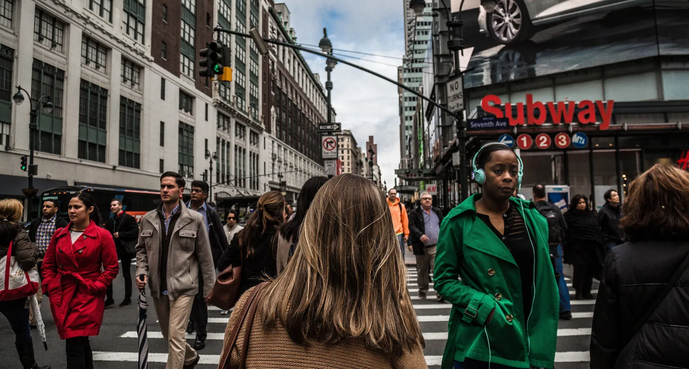
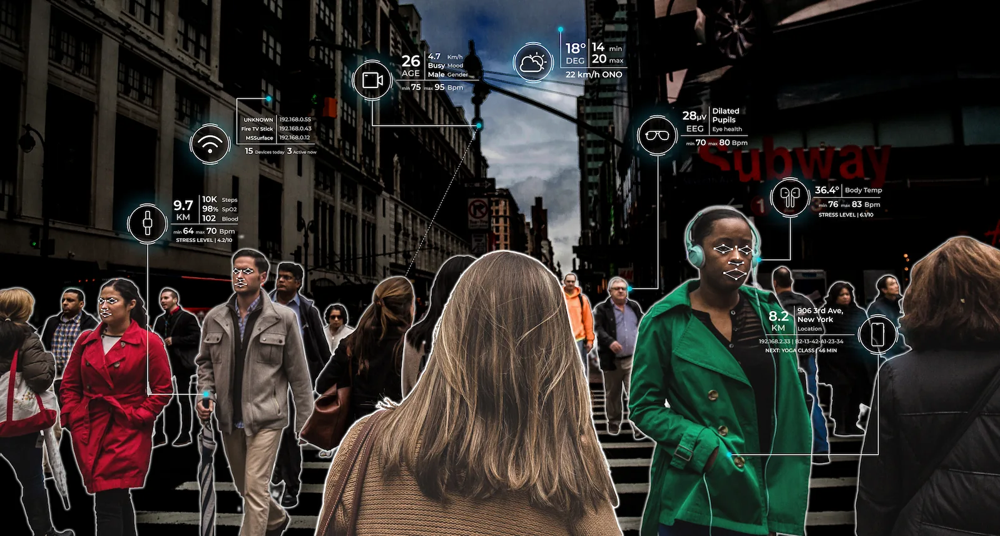

<!-- <div id="fakepause"> 
	
</div> -->

<div class="container">
	is translated into healthcare data
</div>


<div id="comparison" class="comparisonSection">
    <div class="comparisonImage beforeImage">
        
    </div>
    <div class="comparisonImage afterImage">
        
    </div>
</div>

<script>

gsap.utils.toArray(".comparisonSection").forEach(section => {
	let tl = gsap.timeline({
			scrollTrigger: {
				trigger: section,
				start: "center center",
        // makes the height of the scrolling (while pinning) match the width, thus the speed remains constant (vertical/horizontal)
				end: () => "+=" + section.offsetWidth, 
				scrub: true,
				pin: true,
        anticipatePin: 1
			},
			defaults: {ease: "none"}
		});
	// animate the container one way...
	tl.fromTo(section.querySelector(".afterImage"), { xPercent: 100, x: 0}, {xPercent: 0})
	  // ...and the image the opposite way (at the same time)
	  .fromTo(section.querySelector(".afterImage img"), {xPercent: -100, x: 0}, {xPercent: 0}, 0);
});

const containers = gsap.utils.toArray(".container");
containers.forEach((container) => {
  gsap.to(container, {
    autoAlpha: 1,
    ease: "power1.in",
    scrollTrigger: {
      trigger: container,
      pin: true,
      scrub: true
    }
  });
});

</script>